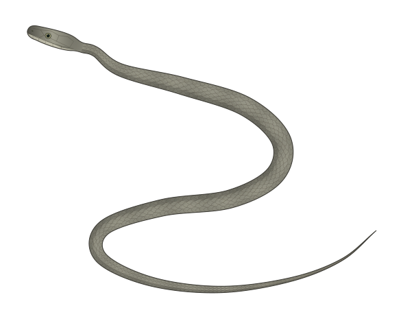
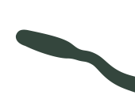
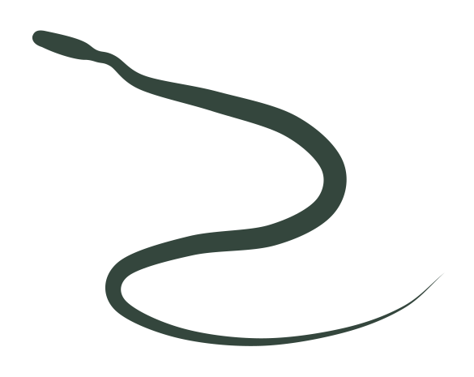
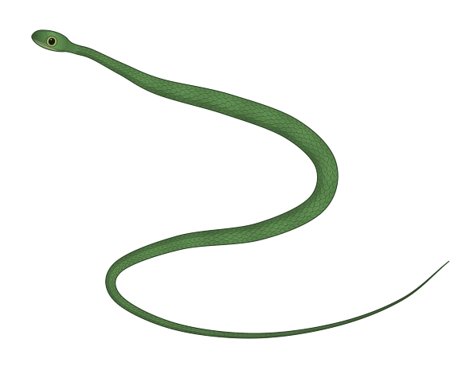
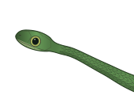

Shared display scale and open pose make changes in head, neck and taper visible. This is an illustrative comparison, not a comparison of actual adult sizes.
Reference-guided draft; no expert anatomical approval or measurements.

Remodeled full body

Skull detail and shape without pigmentation
Long low coffin-like head rather than a short rounded capsule.
Small lateral eye and pale lip line; head neck junction remains gradual.
Trunk stays slender through a long section before a gradual tail taper.
Original photo reference and scope
Reference photographs are local-only and may not be present in a checkout. (c) Wynand Uys, some rights reserved (CC BY) · cc-by · inat_15204379
Grey-olive closed-mouth adult; the body is not automatically black. Photos may show different stages, colors and perspectives; they guide structure, not a calibrated reconstruction.
Before and after: outline comparison
Previous

Revised
Boomslang
Dispholidus typus
Reference-guided draft; no expert anatomical approval or measurements.

Remodeled full body

Skull detail and shape without pigmentation
Flatter roof, less inflated lower jaw and a gently tapered blunt snout, revised against both lateral head close-ups.
Eye remains prominent but is reduced to fit the flatter skull envelope; neck constriction retained.
Earlier long tail taper, coarse keeled scale edges; green palette is an adult-male-style option.
Original photo reference and scope
Reference photographs are local-only and may not be present in a checkout. (c) Wynand Uys, some rights reserved (CC BY) · cc-by · inat_15165535
Green adult male-style variant; not representative of females or all male color forms. Photos may show different stages, colors and perspectives; they guide structure, not a calibrated reconstruction.